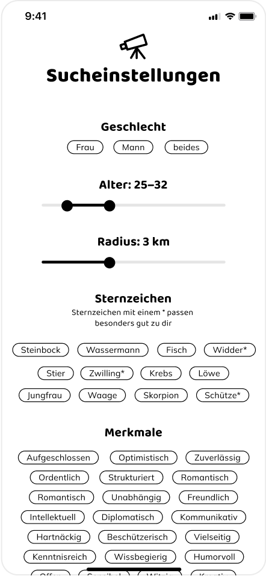
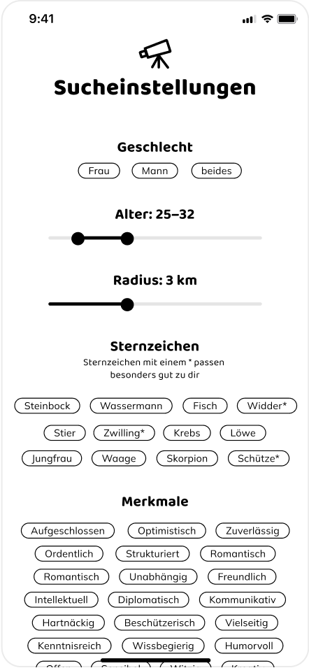

Da ich mich schon in meiner Thesis mit Tinder auseinandergsetzt hatte, wollte ich das Thema Dating App in der praktischen Arbeit weiterverfolgen. Diese App sollte eine andere Erfahrung bieten, als sich mit der Oberflächlichkeit zu genügen, wie man es von den meisten Dating-Apps kennt. Aus diesem Grund entschied ich in ein neues Terrain einzutauchen und mich mit der Astrologie zu befassen. Auf die Entstehung und den Prozess werde ich hier nicht weiter eingehen, das können Sie gerne bei Interesse in der Dokumentation einsehen, in welcher der Prozess ausführlicher beschrieben ist.
 

Ein astrologischer Guide für die Liebe.
Besser als nur einen Swipe, in Astrolove werden umliegende Personen mit einem Score von 1 bis 10, basierend auf euren astrologischen Kompatibilitäten, angezeigt. Es gibt kein warten auf einen ausgelösten Match, mach selbst den ersten Schritt.
Du musst nicht ein Pro in Astrologie sein, um die App zu benutzen, lerne selbst was über dein Sternzeichen und Aszendeten. Erfahre was deine Geburtskarte über dich aussagt, oder wann ein günstiger Zeitpunkt besteht, einen Schritt weiter zu gehen, mit deinem täglichen Horoskop.
Bestimme deine wichtigsten Suchkriterien oder lass dich in erster Linie von Astrolove leiten.
Entwickle dich weiter und personalisiere deine Einstellungen.
Ist dein Interesse geweckt und willst noch tiefer in das Universum von Astrolove eintauchen?